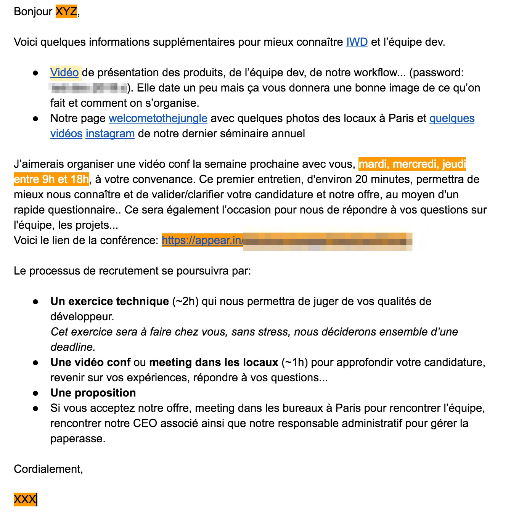
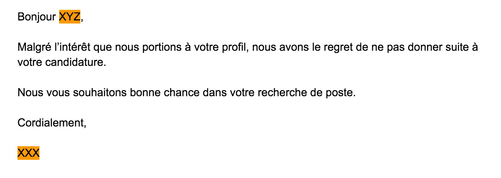

Suivi

Tipsun budget dédié fait gagner du temps et comme le temps c'est de l'argent...
Tipsmaîtrise du framework X on s'en fout
Comment trouver les candidats?
Phase d'accroche, de séduction 💕

Que pourriez-vous proposer pour améliorer/aider l’équipe (process, outils...)?
On cherche à connaître son expérience, ces pratiques, s'il voit déjà des améliorations (QA, A/B testing...)
Qu'est ce que vous aimez dans votre job actuel?
L'équipe, les pratiques, la techno, le challenge...
Ce qui vous plaît moins?
Salaire, techno, stagnation, leadership...
Pourquoi voulez-vous travailler chez nous?
Pratiques, équipe, techno, impact, évolution, salaire...
Comment organisez-vous votre veille technique?
N'en fait pas, quotidienne, voir s'il se laisse vivre, ce qui l'intéresse en ce moment
Dernier gros challenge technique?
On creuse une expérience récente, on challenge ces choix, on voit s'il maîtrise son sujet
Qu’est-ce qu’un code est bon?
Découplage, injection de dépendance, orienté métier ("DDD"), coding style, tests, maintenabilité, évolutivité, ...
A quoi sert une Interface en POO?
Définir un contrat, découplage, injection de dépendance, évolutivité...
De quoi est composée une requête HTTP?
Connaissance du protocol, http2
Comment gardez-vous une vision claire de votre prod?
Logs, monitoring, Nagios, New Relics, ELK, alerting...
Vous avez une grosse charge sur un services. Comment faîtes-vous pour la gérer?
Cache applicatif et/ou http et/ou client, load balancer...
Avantage/inconvénient de la techno X
Avoir du recul, connaître les forces/faiblesses, comparer à d'autres techo PHP vs Node
Une/Deux questions spécifiques au language (Trait en PHP, this/Promise en JS)
Connaissance des ajouts "récent" du language, concept de base
Questions sur l'ecosystem, les bonnes pratiques...
Connaissance de la communautés, se tient à jour...
Répondre de manière positive "bonne chance pour ton nouveau job"...
On ne sait jamais, on se recroisera peut-être. Ne pas oublier de le sourcer.
Restez formel mais toujours positif.
S'il vous demande pourquoi, soyez franc et direct.
Tipsne jamais insulter l'avenir

Tipsprendre le temps d'itérer sur le challenge, ça vaut le coup de l'améliorer en fonction des rétoursTipsfaire plusieurs challenges dérivés en fonction du profil junior/sénior ou backend/frontend
Définir ce que vous cherchez à voir:
Dans 90% des cas, on a déjà très envie de recruter le candidat
Si non Francilien, rembourse le billet de TGV
Le plus dure est fait.
Sur la dernière année:
Il est notre dernière recrue à Lyon. 🙏 ajouter le sur twitter @dpobel sinon je dois retirer cette slide
Qu'est-ce qui t'as donner envie de répondre à ma solicition sur talen.io?
Le process de recrutement était claire. Le fait que ça se passe sur talent.io, la relation est un peu inversée et donc à priori si on est contacté ce que ça paraît coller côté recruteur.
La vidéo exprimait bien le contexte du job, de l'équipe et de la société.
Qu'est-ce qui a fait que tu nous as dis oui 💒?
Le bon contact avec toi et l’équipe (il veut déjà une augmentation 😄), prétention salariale OK sans discussion, le challenge technique qui pose des questions pertinentes et qui m’ont permis d’avoir un bon aperçu de où j’allais. Enfin l’aspect remote tout en ayant des collègues à Lyon, le meilleur des 2 mondes en gros 🎉.